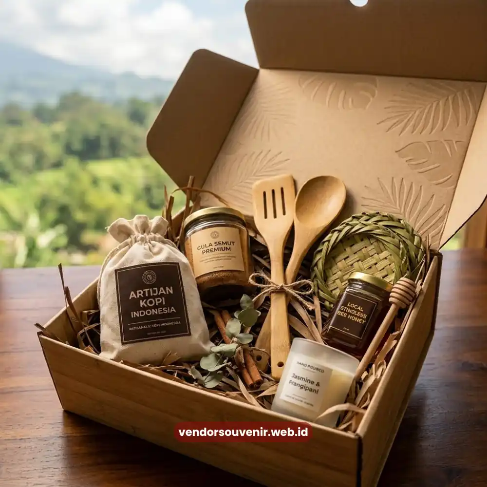

Daftar Isi
Corporate gift hampers ramah lingkungan adalah paket hadiah korporat yang disusun menggunakan kemasan dapat didaur ulang serta produk berkelanjutan sebagai bentuk komitmen perusahaan terhadap kelestarian lingkungan.
Pendekatan ini semakin relevan seiring meningkatnya perhatian klien, mitra bisnis, maupun karyawan terhadap praktik bisnis yang bertanggung jawab secara sosial dan lingkungan.
Melalui hampers ramah lingkungan, perusahaan dapat menyampaikan nilai keberlanjutan secara nyata, bukan sekadar melalui pernyataan formal di laporan tahunan.
- Kemasan berkelanjutan menjadi elemen utama yang membedakan hampers ramah lingkungan dari hampers konvensional.
- Produk lokal dan UMKM kerap menjadi pilihan utama untuk memperkuat nilai keberlanjutan hampers.
- Tren ini merespons meningkatnya perhatian stakeholder terhadap praktik bisnis yang bertanggung jawab.
- Hampers ramah lingkungan dapat memperkuat citra bisnis sekaligus relasi dengan penerima yang peduli isu lingkungan.
Apa yang Dimaksud dengan Corporate Gift Hampers Ramah Lingkungan?
Corporate gift hampers ramah lingkungan merujuk pada hampers yang disusun dengan mempertimbangkan dampak lingkungan pada setiap elemennya.
Hal ini mencakup mulai dari material kemasan hingga jenis produk yang dipilih di dalamnya.
Konsep ini mencakup penggunaan bahan kemasan yang dapat didaur ulang atau terurai secara alami, serta pemilihan produk yang diproduksi melalui proses berkelanjutan.
Pendekatan ini berbeda dari hampers konvensional yang umumnya mengutamakan tampilan visual tanpa mempertimbangkan dampak jangka panjang terhadap lingkungan.
Hampers ramah lingkungan hadir sebagai jawaban atas kebutuhan bisnis modern yang ingin selaras dengan nilai keberlanjutan tanpa mengorbankan kualitas dan kesan profesional.
Mengapa Perusahaan Kini Beralih ke Hampers Ramah Lingkungan?
Perusahaan beralih ke hampers ramah lingkungan karena meningkatnya ekspektasi stakeholder terhadap tanggung jawab sosial dan lingkungan.
Ini termasuk dalam setiap aspek operasional bisnis, seperti pada aktivitas corporate gifting.
Klien dan mitra bisnis, khususnya generasi profesional yang lebih sadar isu lingkungan, cenderung memberikan apresiasi lebih.
Mereka menghargai perusahaan yang menunjukkan komitmen nyata dalam praktik berkelanjutan.
Selain faktor eksternal, banyak perusahaan juga menjadikan hampers ramah lingkungan sebagai bagian dari strategi internal.
Tujuannya memperkuat nilai keberlanjutan di lingkungan kerja, sehingga karyawan turut merasakan konsistensi nilai perusahaan.
Produk Lokal Hampers Korporat Sustainable
Produk Apa yang Cocok Dimasukkan dalam Hampers Ramah Lingkungan?
Produk yang cocok dimasukkan dalam hampers ramah lingkungan umumnya berupa hasil UMKM lokal.
Selain itu juga cocok menggunakan produk dengan kemasan minim plastik, serta barang fungsional yang dapat digunakan berulang kali.
Produk lokal tidak hanya mendukung nilai keberlanjutan, tetapi juga memberikan cerita otentik.
Cerita otentik ini dapat memperkuat kesan personal dari hampers tersebut.
Selain produk konsumsi, barang fungsional seperti perlengkapan kerja berbahan ramah lingkungan juga semakin banyak digunakan.
Hal ini memberikan nilai guna jangka panjang bagi penerima, sekaligus mengurangi potensi limbah dibandingkan produk sekali pakai.
Bagaimana Hampers Ramah Lingkungan Memperkuat Citra Bisnis di Mata Stakeholder?
Hampers ramah lingkungan memperkuat citra bisnis dengan menunjukkan konsistensi.
Yaitu konsistensi antara nilai yang dikomunikasikan perusahaan dan tindakan nyata yang dilakukan, termasuk dalam aktivitas corporate gifting.
Konsistensi ini penting karena stakeholder modern cenderung lebih memperhatikan bukti nyata.
Bukan sekadar klaim keberlanjutan tanpa implementasi konkret.
Ketika sebuah perusahaan secara konsisten menghadirkan praktik ramah lingkungan, hal ini membangun kepercayaan.
Kepercayaan jangka panjang dari klien, mitra, maupun karyawan terhadap komitmen keberlanjutan perusahaan tersebut.

Solusi Gift Set dari Vendor Terpercaya
Kesimpulan
Corporate gift hampers ramah lingkungan menjadi cara nyata bagi perusahaan untuk menunjukkan komitmen keberlanjutan.
Sekaligus juga bisa mempererat relasi bisnis dengan cara yang sangat bermakna.
Pemilihan kemasan dan produk yang tepat menjadi kunci keberhasilan pendekatan ramah lingkungan ini.
Hubungi Vendor Souvenir untuk mendapatkan solusi hampers berkelanjutan yang sesuai dengan identitas bisnis Anda.
Butuh Bantuan Merancang Hampers Ramah Lingkungan?
Tim ahli kami siap membantu Anda menyusun paket hadiah eksklusif dan
berkelanjutan.
Pilihan barang dan kemasan eco-friendly akan disesuaikan dengan ketersediaan budget
Anda.
Mari tunjukkan komitmen nyata kelestarian lingkungan dari perusahaan Anda.
Dapatkan penawaran harga terbaik untuk pesanan massal!
FAQ
Apakah hampers ramah lingkungan lebih mahal dibandingkan hampers biasa?
Biaya dapat bervariasi tergantung jenis material dan produk yang dipilih, namun banyak opsi ramah lingkungan yang tetap kompetitif dari sisi anggaran.
Apa contoh kemasan ramah lingkungan untuk hampers korporat?
Contohnya meliputi kemasan berbahan kertas daur ulang, anyaman alami, atau material yang dapat digunakan kembali oleh penerima.
Apakah hampers ramah lingkungan tetap bisa terlihat premium?
Bisa, karena kesan premium ditentukan oleh kerapian desain dan kurasi produk, bukan semata-mata jenis material yang digunakan.
Maroon Souvenir
Partner Corporate Gift terpercaya di Indonesia. Berpengalaman melayani ratusan perusahaan sejak 2018.
Lihat Portofolio Kami